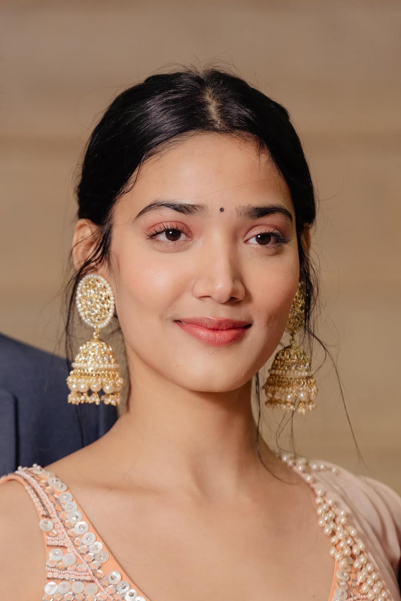

Vikrant
Vikrant Massey (born 3 April 1987) is an Indian actor who works in Hindi
films and television. After completing his education from R. D. National
College, Massey made his acting debut with Dhoom Machaao Dhoom (2007)
and worked in television serials such as Dharam Veer (2008), Balika
Vadhu (2009–2010) and Qubool Hai (2013).Massey expanded to films with
supporting roles in Lootera (2013), Dil Dhadakne Do (2015) and Half
Girlfriend (2017). The independent drama A Death in the Gunj (2017), in
which Massey had a leading role., marked a turning point in his career.,
gaining him a nomination for the Filmfare.

Medha shankar
Medha Shankar is an Indian actress who primarily works in Hindi films.
Shankar made her acting debut with Beecham House (2019) and subsequently
had supporting parts in Shaadisthan and Dil Bekaraar (both 2021). She
had her breakthrough with 12th Fail (2023). Shankar was born and brought
up in Noida, Uttar Pradesh. Shankar is a trained Hindustani classical
singer. She completed her master's degree in Fashion Management from
National Institute of Fashion Technology, Delhi.Shankar made her film
debut in 2021, with Shaadisthan. She portrayed Arshi. Shrishti Negi of
News18 opined.

Anshuman
Anshumaan Pushkar is an Indian actor. He is best known for playing the
role of Rishi Ranjan in the Hotstar original series Grahan (2021) and
Jamtara as Rocky on NetflixPushkar was born on 17 August 1993 in Mokama,
a small town in the Patna district of Bihar. He is the son of Late
Virendra Prasad Singh. His sister is Jahvi Rajan.He completed his
matriculation at S. B. H. School, Mokama and graduated from Vanijya
Mahavidyalaya, Patna. After his graduation, he obtained an MBA degree
from Rajiv Gandhi Institute of Technology, Mumbai. which was written and directed by
Richie Mehta. Based on the aftermath of the 2012 Delhi gang rape and
murder, another Netflix project Thar (film) by Raj Singh Chaudhary.

Sanjay
Pushkar was born on 17 August 1993 in Mokama, a small town in the Patna
district of Bihar. He is the son of Late Virendra Prasad Singh. His
sister is Jahvi Rajan. He completed his matriculation at S. B. H.
School, Mokama and graduated from Vanijya Mahavidyalaya, Patna. After
his graduation, he obtained an MBA degree from Rajiv Gandhi Institute of
Technology, MumbaiSanjay was born in Jodhpur district of Rajasthan. He
got his high school certificate from Holy Spirit School, Jodhpur. He
attended Indira College of Commerce and Science, Pune. After his
graduation, Bishnoi trained with theatre director and teacher Barry John
for acting.Bishnoi started his acting journey with an indie film Ashok
Vatika (2018) as a lead. Sanjay was part of principal cast of Emmy
Awards Netflix series Delhi Crime. which was written and directed by
Richie Mehta.